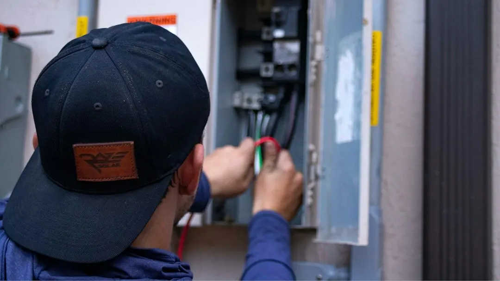

For homeowners comparing electrical repairs paddington options, the practical decision is how to describe the fault, confirm the required licence and obtain a clear written scope before work begins.
Electrical Repairs Paddington Explained
Electrician Paddington describes repeated safety switch trips, a section of the house going dead and lights dimming when an air conditioner starts as useful clues. Record which rooms lose power, what was running and whether the problem appears at night, in rain or when a particular appliance is switched on.
Try only the basic observation that does not involve electrical work. If the switch trips again with everything unplugged, the wiring becomes the likelier source described by the provider. A fault may sit in one cable run or connection, so repeatedly resetting the switch does not explain or fix the cause.
Smoke, a burning smell or an injury changes the priority. Call 000 first, then describe what happened to the electrician. The useful handover includes the affected rooms, recent renovation work, appliances connected at the time and whether the fault is constant or intermittent.
Choose the right repair path
Fault finding is appropriate when the symptom is uncertain. The electrician can isolate and test circuits in turn until the cause is identified. A dead power point, flickering light or tripping circuit may need a different repair from a defined installation such as an extra outlet or replacement light fitting.
Older Paddington homes can have wiring added over decades. In a lined timber Queenslander, new cable may run through the roof space or under the floor to avoid cutting open walls. That access issue can affect the scope of a renovation or rewiring job, so ask whether the quote includes access, making good and any work discovered behind the lining.
- Use fault finding when the cause or affected circuit is unclear.
- Ask about switchboard capacity before adding major equipment such as an electric vehicle charger.
- For renovation work, identify new circuits, lighting, fans, smoke alarms and power points before the quote is finalised.
Switchboards, smoke alarms and upgrades
A board using ceramic fuses does not have safety switches. The provider explains that safety switches cut power quickly when current leaks, including through a person. An upgrade can place that protection across the whole house, but the written scope should state what is being replaced and which circuits are included.
Everyday upgrades also include moving switches, adding power points, installing dimmers, replacing halogen lighting with LED options and fitting weatherproof outdoor outlets. A home charger in a garage or carport may require switchboard capacity work first. That capacity question should be settled before installation rather than after the charger has been selected.
Beeping or outdated smoke alarms are another reason to request an assessment. The published service description refers to interconnected alarms, so ask how the alarms will sound together when one detects smoke and what replacement work is included.
Licensing, paperwork and the quote
Queensland electrical work beyond simple tasks such as changing a light bulb, tube or fuse, or resetting a breaker or safety switch, is for a licensed electrician. The business doing the work must hold a Queensland electrical contractor licence. Check the licence number in the online Electrical licence holder search and make sure the responsible business is identified on the quote.
Cost depends on the work. Tracing a fault, adding power points and upgrading a switchboard are different jobs, and reaching a fault inside a lined wall can require more work than reaching the board. A useful quote separates fault finding from defined installation work and explains what happens if the investigation reveals a concealed issue.
When installation work is complete, keep the Queensland certificate of testing and compliance. It records that the completed work was tested and provides important paperwork for future maintenance, renovation discussions or a later property file.
Who this guide applies to
This guide suits owners and occupants of older timber Queenslanders, workers' cottages and terraces in Paddington who need to decide what information to give an electrician. It is also relevant to nearby homes in Red Hill, Milton, Petrie Terrace, Bardon, Ashgrove and the other locations named by the provider, where the same questions about fault patterns, access and licensing can arise.
It is not a substitute for diagnosis or electrical work. Before booking, write down the symptom, affected rooms, timing and nearby appliances. Ask who holds the contractor licence, what the first visit includes, how unexpected access work is handled and which certificate or paperwork will be supplied when the job is finished.
For a separate local guide focused on the same repair topic, see the companion Paddington electrical repairs guide.
- Describe the symptom. Record the rooms affected, what was running and when the fault appears.
- Confirm the licence. Ask for the Queensland electrical contractor licence number and check it in the online search.
- Set the scope. Separate fault investigation from defined installation work and ask how concealed issues are handled.
- Keep the paperwork. Retain the certificate of testing and compliance after installation work is completed.
| What you notice | Likely decision point | Ask before work starts |
|---|---|---|
| Safety switch trips repeatedly | Fault finding may be needed, especially if appliances are unplugged | Which circuit will be isolated and tested? |
| Part of the house is dead | Identify affected rooms and recent appliance use | Does the scope cover diagnosis and the repair? |
| Old ceramic fuse board | Discuss a switchboard upgrade and safety switches | Which circuits receive protection? |
| New charger or renovation | Check capacity, access and new circuit requirements | What installation and making good are included? |
This guide covers fault clues, licensing, quote questions, switchboards, smoke alarms and upgrade planning for homes in Paddington and nearby suburbs.